A discrete convolution is defined by sliding a small kernel across an image and, at each
location, computing a weighted sum of the local neighborhood with zero-padding so that the
output retains the spatial dimensions of the input. This operation implements a linear,
shift-invariant filter whose effect is determined entirely by the choice of kernel.
The experiment compares three concrete realizations of this definition: a naïve four-loop
baseline, a partially vectorized two-loop NumPy implementation, and SciPy’s optimized
convolve2d. All three are applied to the same self-portrait with a 9×9 box
filter, so any differences in outcome can be attributed to numerical or implementation
details rather than to the underlying operator.
A benchmark on the 9×9 box filter, averaged over multiple runs, yields runtimes of
approximately 9066.8 ms for the four-loop implementation, 1634.2 ms for the
two-loop implementation, and 70.5 ms for the SciPy routine. The partially vectorized
version is therefore faster than the naïve one by a factor of about 5.5, while SciPy
achieves a speedup of roughly 129 over the four-loop baseline and about 23 over the
two-loop method. The timing data establish that expressing convolution in terms of large
array operations, rather than explicit Python loops, is decisive for efficiency.
The three filtered selfies smooth high-frequency detail in the hair, pavement, and jacket
while preserving coarse structure such as the outline of the face and the bike rack. The
outputs are visually indistinguishable, and any discrepancies are below the level of
perceptual relevance. Together with the timing measurements, this shows that the custom
NumPy implementations are numerically consistent with the library routine and differ
principally in computational cost rather than in filtering behavior.
1.2 Finite Difference Operator
This section studies how simple finite-difference filters approximate image gradients on
the standard cameraman photograph. A horizontal difference kernel measures local changes in
intensity from left to right, while a vertical difference kernel measures changes from top
to bottom. The corresponding derivative images respond strongly where the scene contains
vertical or horizontal edges and remain close to zero in regions where intensity varies
slowly.
The directional derivatives are combined into a gradient-magnitude image that summarizes
edge strength independently of direction, and a global threshold converts this continuous
field into a binary edge map. In addition, two visualizations of gradient orientation are
produced in color space: one relies on a fast approximation to the angle, and the other
uses an explicit arctangent computation. Their comparison reveals both the geometric
structure of the cameraman scene and the accuracy of the approximate orientation method
relative to the reference.
Cameraman gradients, magnitudes, and edges
Original cameraman image (grayscale reference for all derivative visualizations).
Horizontal derivative: vertical structures such as the tripod legs and building edges
appear as bright responses where intensity changes strongly left-to-right.
Vertical derivative: horizontal structures such as the horizon and rooftop lines
dominate the response, while sky and grass remain near zero.
Gradient magnitude: combines horizontal and vertical changes into a single measure of
edge strength, concentrating high values along object boundaries.
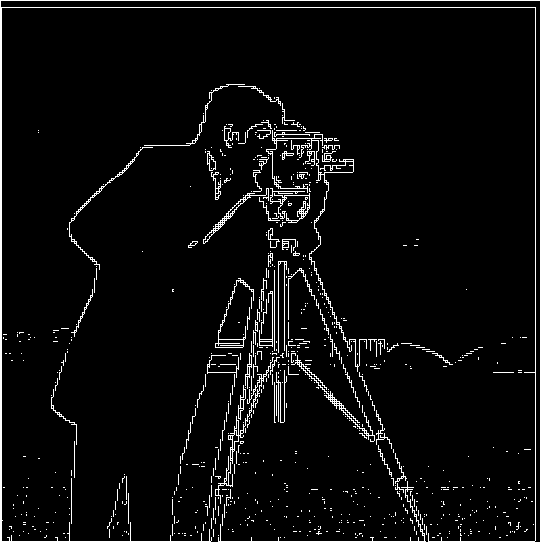
Binary edge map: thresholded gradient magnitude retains the main contours of the
cameraman, tripod, and skyline while suppressing small noisy responses.
Orientation visualization (fast approximation): edge direction is encoded as hue, with
saturation driven by gradient strength, revealing how directions vary smoothly along
curved contours.
Orientation visualization (arctangent reference): produces almost identical color
patterns, confirming that the approximate method recovers the same underlying
orientation field at lower computational cost.
The derivative images, gradient magnitude, edge map, and orientation fields together
specify the geometric information extracted by finite differences from a single grayscale
image. The directional derivatives separate vertical and horizontal content, the gradient
magnitude emphasizes locations where intensity varies most rapidly, and the thresholded map
isolates a set of clean structural contours. The orientation visualizations add directional
structure to these contours, which is essential for tasks such as corner detection and
feature description. The close agreement between the fast and reference orientation images
indicates that the approximate computation is sufficiently accurate for downstream use
while retaining a lower computational cost.
1.3 Derivative of Gaussian Filter
We now explore two strategies for computing smoothed image gradients: first blurring
the image with a Gaussian filter and then applying finite-difference kernels, versus
convolving once with derivative-of-Gaussian (DoG) kernels. Since convolution is linear and
shift-invariant, differentiating the Gaussian and then convolving the result with the image
should be equivalent, up to numerical and boundary effects, to convolving with the Gaussian
followed by discrete differentiation.
Horizontal and vertical derivative-of-Gaussian kernels are constructed and applied to the
cameraman image. The resulting directional derivatives and gradient magnitudes are
juxtaposed with those obtained from the “smooth then difference” pipeline. The comparison
tests whether the one-step DoG approach reproduces the same sharpened edges and reduced
noise as the two-stage method that explicitly separates smoothing and differentiation.
Gaussian smoothing vs. derivative-of-Gaussian
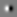
Horizontal DoG kernel: a smoothed, antisymmetric pattern that responds to vertical
edges while attenuating high-frequency noise.
Vertical DoG kernel: rotated counterpart used to detect horizontal edges with the same
built-in smoothing.
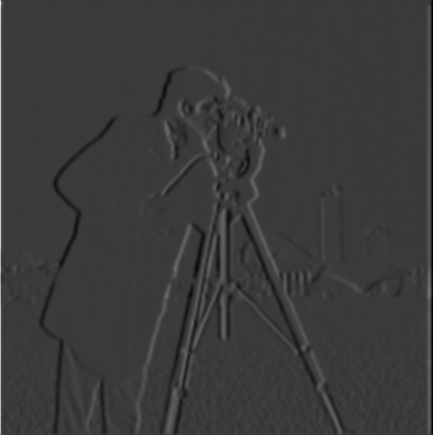
Horizontal gradient from “smooth then difference”: vertical contours of the tripod,
coat, and buildings remain sharp, but background noise is strongly reduced.
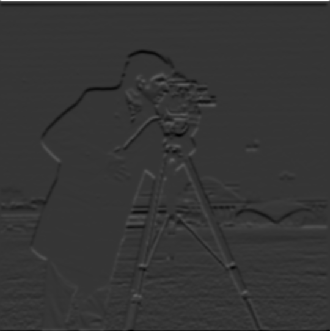
Vertical gradient from “smooth then difference”: horizontal structures such as the
horizon and rooftops dominate the response with fewer speckles in the sky and grass.
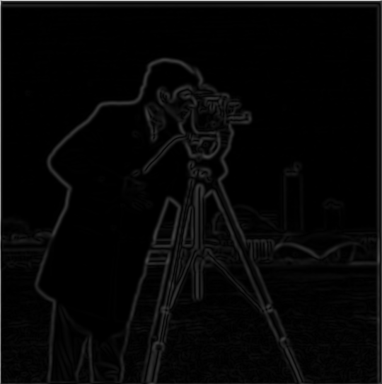
Gradient magnitude for “smooth then difference”: a clean edge map where strong
contours are preserved and fine-grained noise has been suppressed by the initial blur.
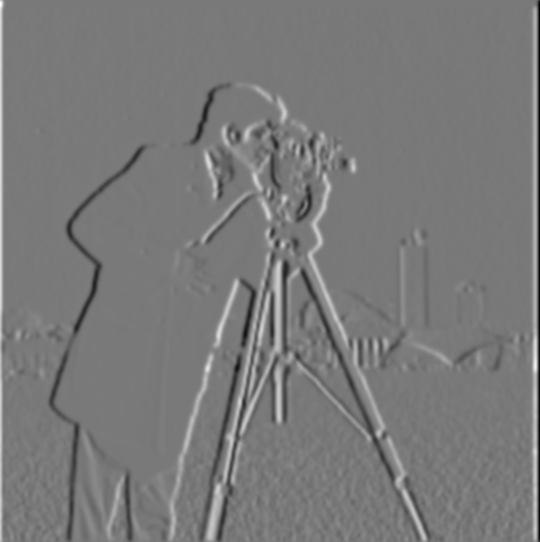
Horizontal gradient from DoG convolution: closely matches the smooth-then-differentiate
result, confirming that the DoG kernel embeds both smoothing and differentiation.
Vertical gradient from DoG convolution: edge strengths and locations align with the
corresponding smooth-then-difference vertical derivative.
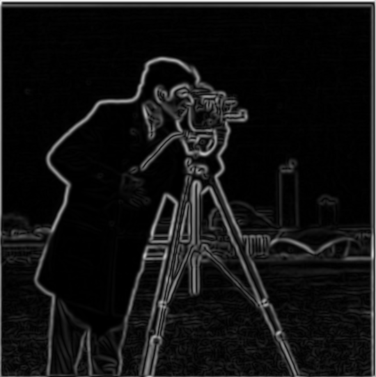
Gradient magnitude from DoG convolution: nearly indistinguishable from the
smooth-then-difference magnitude, demonstrating the equivalence of the two pipelines in
both structure and edge strength.
The side-by-side comparison shows that Gaussian smoothing followed by finite differencing
and direct convolution with derivative-of-Gaussian kernels produce essentially the same
gradient fields and edge magnitudes. Residual discrepancies are minor and can be explained
by numerical precision and padding rather than by any substantive difference in the
underlying operators. Derivative-of-Gaussian filters therefore provide a compact, one-step
realization of the “blur then differentiate” pipeline and serve as a convenient and robust
building block for edge detection and feature extraction.
2.1 Image Sharpening with Unsharp Masking
This section analyzes unsharp masking as a method for enhancing fine detail in a photograph
of the Taj Mahal. The procedure forms a smoothed version of the image by convolving with a
Gaussian blur kernel, subtracts this low-pass version from the original to isolate a
high-pass component containing edges and textures, and then adds a scaled copy of this
high-pass signal back to the original. The sharpened image exhibits increased local
contrast near boundaries while largely preserving the global brightness and coloration of
the scene.
Interpreted in terms of kernels, unsharp masking combines an impulse-like identity kernel
with a negative Gaussian to create an effective filter with a strong positive center and a
weaker negative surround. This structure amplifies rapid spatial changes and slightly
suppresses slowly varying regions. The intermediate visualizations of the blur, the
extracted high-pass component, the sharpened output, and the equivalent single unsharp
kernel clarify how the operation redistributes contrast across spatial scales.
Unsharp masking pipeline on the Taj Mahal
Gaussian blur kernel: a small, isotropic low-pass filter that produces a softened version
of the image and suppresses high-frequency noise.
Blurred image: large-scale structure of the Taj Mahal is preserved, but fine architectural
details and textures in the trees and walkway are noticeably washed out.
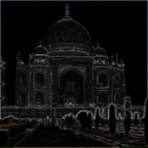
High-pass component: subtraction of the blurred image from the original isolates edges and
fine detail. The building outline, ornamental patterns, and strong intensity transitions
appear as bright responses on a dark background.
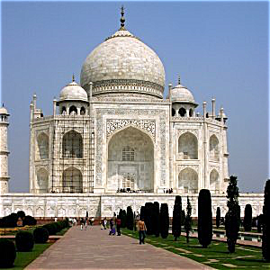
Sharpened result: adding a scaled high-pass signal back to the original yields a crisper
image. The dome ridges, facade carvings, and tree silhouettes gain local contrast without
creating strong halos or amplifying background noise.
Effective unsharp kernel: combining the impulse (identity) with a negative Gaussian blur
produces a single convolution kernel whose positive center and negative surround implement
“original plus scaled high-pass” in one step.
The same unsharp masking pipeline is then applied to a scanned vintage family photograph as
a second example. In this case the blur uses a broader Gaussian with a larger kernel so
that the high-pass component captures mid-scale structures such as facial features,
clothing folds, and plant outlines, while averaging over film grain and digitization noise.
The visualizations again present the blur, the extracted high-frequency content, the
sharpened image, and the effective kernel.
Unsharp masking on a vintage family scan
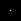
Gaussian blur kernel used to define the low-pass component for the vintage photograph,
tuned to treat facial features and clothing folds as detail while smoothing over finer
grain.
Original scan: a slightly faded, low-contrast family photograph with modest blur and
visible texture from aging and digitization.
Blurred image: large shapes such as the figure and background plants remain, but fine
details in the face, shirt, and foliage are smoothed away by the Gaussian filter.
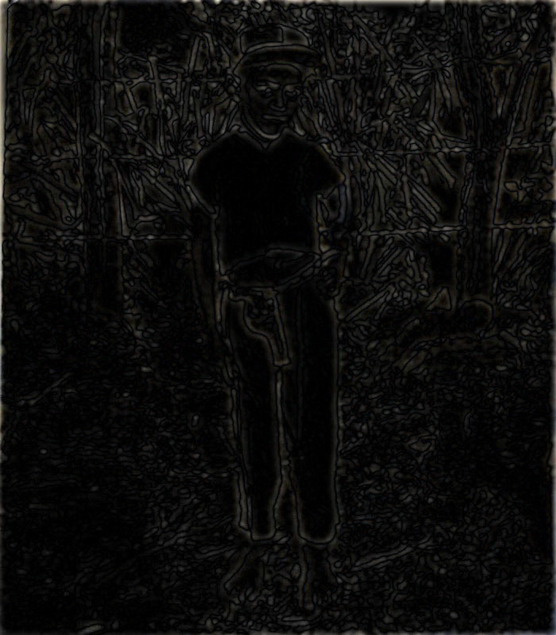
High-pass component: subtraction of the blur from the original isolates edges and local
contrast changes, outlining the figure, clothing seams, and wire fence while largely
suppressing uniform regions.
Sharpened result: adding the high-pass signal back restores crispness to facial
features and surrounding vegetation, making the photograph clearer without introducing
strong halos or emphasizing noise artifacts.
Effective unsharp kernel: the central impulse and negative Gaussian surround together
implement the entire “original plus scaled high-pass” operation as a single convolution,
tuned to the softer focus and lower resolution of the scan.
The Taj Mahal and vintage photograph examples together show how unsharp masking parameters
fix the notion of “detail” that is being enhanced. A narrower blur sharpens fine
architectural edges in a high-resolution scene, whereas a broader blur applied to the scan
targets mid-scale structure and prevents film grain from becoming visually dominant. In
both cases, the method operates by selectively boosting high-frequency content relative to
a smooth background, producing images that appear more focused without resorting to a
simple global contrast adjustment.
2.2 Hybrid Images
A hybrid image combines the low frequencies of one photograph with the high frequencies of
another so that perception changes with viewing distance. In this example, Derek’s face
supplies the coarse, low-frequency structure, while Nutmeg contributes the fine,
high-frequency detail such as fur and whiskers. The filtering parameters control how sharply
these two bands are separated and how strongly the high-frequency content is reintroduced
into the final composition.
The portrait is heavily blurred with a Gaussian filter, producing a smooth low-pass image in
which small-scale details are suppressed but the overall facial geometry and shading remain
intact. The image of Nutmeg is transformed into a high-pass signal by subtracting a softened
version of itself, yielding an essentially zero-mean edge map dominated by sharp contours
and texture. Before the two components are added, the high-pass layer is attenuated so that
cat features are clearly visible at close range but do not overwhelm the underlying
low-frequency portrait when the hybrid is viewed from farther away.
Constructing a hybrid portrait–cat image
Aligned portrait (Derek): source for the low-frequency content of the hybrid. Only the
global layout of the face and illumination are intended to survive the subsequent blur.
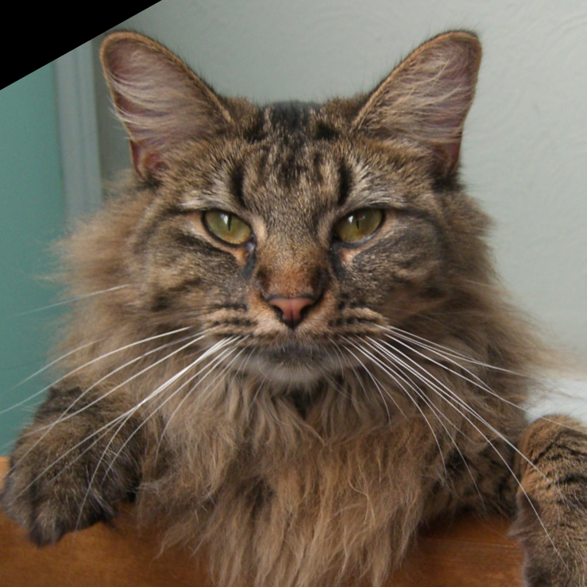
Aligned cat (Nutmeg): source for high-frequency detail. Whiskers, fur strands, and sharp
eye boundaries generate the high-pass structure that dominates close-up perception.
Low-pass portrait with ksize = 53, sigma = 8.0: the wide Gaussian blur
produces a very smooth image where fine texture is almost completely removed but the
coarse arrangement of facial features remains clearly visible.
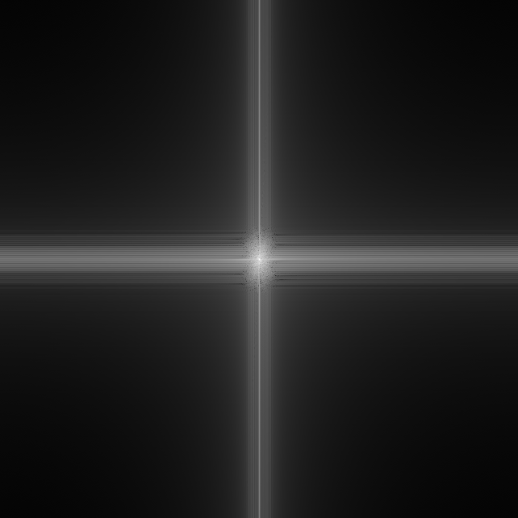
Low-pass Fourier magnitude: a bright blob concentrated at the center with horizontal and
vertical streaks. This indicates that energy is almost entirely in low frequencies,
matching the visually smooth low-pass portrait.
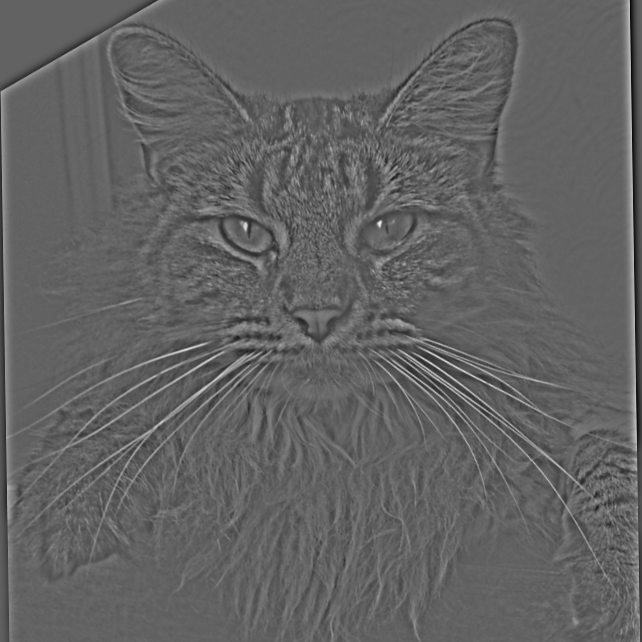
High-pass cat with ksize = 27, sigma = 3.1: subtracting the blurred cat
isolates edges and mid–high-frequency texture, yielding an almost embossed appearance
with strong responses on whiskers and fur.
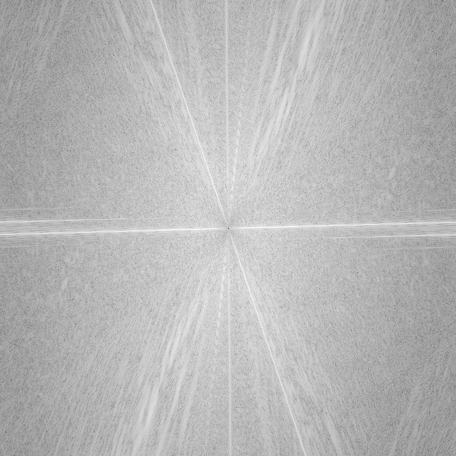
High-pass Fourier magnitude: the central region is darkened, while energy appears in a
ring and diagonal streaks further from the origin. These oriented bands correspond to
Nutmeg’s whiskers and fur, confirming that low frequencies have been suppressed while
edge-dominated components remain.
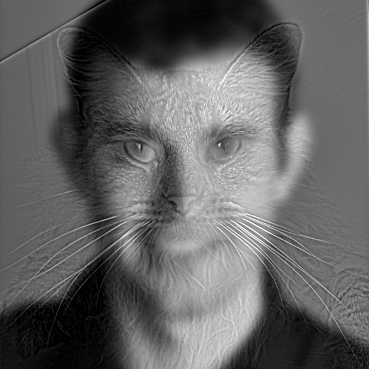
Hybrid image: adding alpha · high to the low-pass portrait yields a face
that appears feline at close range but transitions to Derek’s portrait when the image is
viewed from far away or at reduced resolution. The chosen alpha = 0.2
balances visibility of Nutmeg’s detail with the stability of the large-scale portrait.
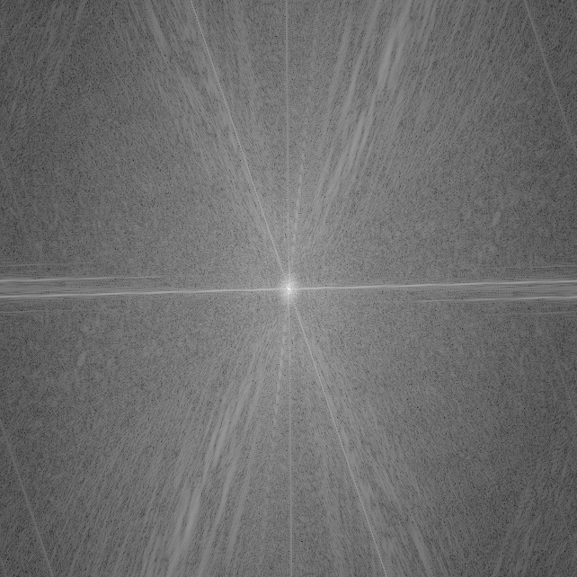
Hybrid Fourier magnitude: combines the bright central blob of the Derek low-pass
spectrum with the outer high-frequency streaks from the cat. The spectrum literally
appears as the sum of the previous two, mirroring how spatial low- and high-frequency
content coexist in the hybrid.
The hybrid displays a clear dependence on viewing scale. At close range, the visual system
preserves high spatial frequencies, and the edge layer therefore asserts itself through
sharp textures and fine contours. As the image is reduced or viewed from a greater distance,
these frequencies are progressively discarded, and the coarse structure of the underlying
portrait becomes the principal object of perception. The Fourier plots render this shift in
explicit form: the low-pass component gathers its energy near the spectral origin, the
high-pass component disperses it into outer bands with marked directional organization, and
the hybrid spectrum is nothing more than their superposition. The degree of blurring and the
weight granted to the edge layer thus fix the partition of spatial scales between the two
sources and determine which of them prevails in attention under different viewing
conditions.
2.3 Gaussian and Laplacian Stacks
A Gaussian stack is obtained by repeatedly smoothing an image with a fixed Gaussian filter
and recording each intermediate level. Successive levels therefore form a sequence in which
high-frequency structure is progressively removed while coarse shading and shape are
retained. A Laplacian stack is derived from this sequence by subtracting adjacent Gaussian
levels; each Laplacian level then isolates a band of spatial frequencies, capturing
structure that is present at one blur scale but absent at the next coarser one. The pair of
stacks together decompose an image into a coarse base and a set of band-pass detail layers.
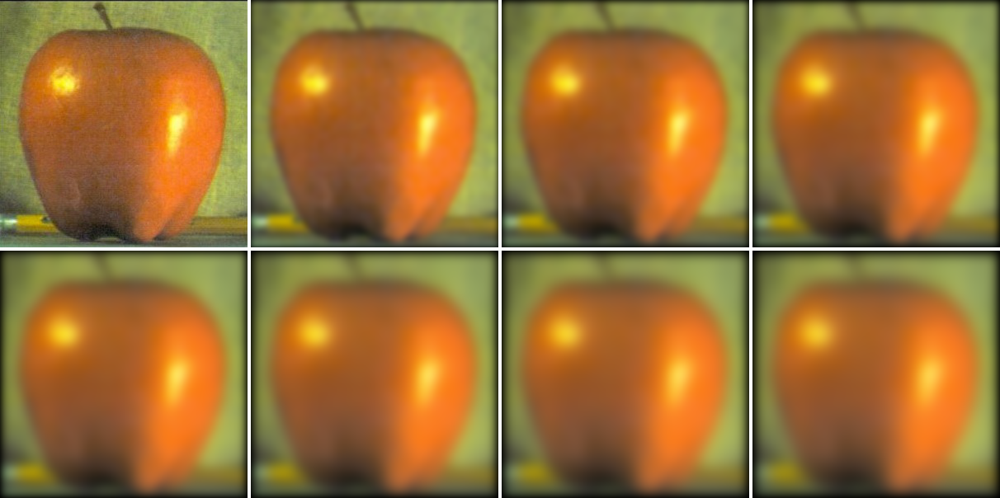
Gaussian stack for the apple: increasingly strong blur removes fine grain while the
silhouette and highlight pattern remain fixed.
Gaussian stack for the orange: peel texture fades with scale, leaving only the smooth
spherical form and broad illumination.
These constructions are examined on two objects of similar shape but different texture and
coloration: an apple and an orange. The Gaussian stacks describe how each fruit’s large-scale
form and illumination emerge as small-scale variations are suppressed, while the Laplacian
stacks localize the edges and surface irregularities into distinct frequency bands that are
useful for blending and multi-resolution editing.
Gaussian stack levels across scale
Apple, Gaussian level 0: original scale with small speckle, background texture, and a
crisp boundary between fruit and background.
Apple, Gaussian level 5: mid-level blur suppresses much of the pixel-level noise while
keeping the stem, specular highlights, and broad shading across the surface.
Apple, Gaussian level 10: only slow intensity variations remain; the object is described
mainly by its round silhouette and a small number of large highlights and shadows.
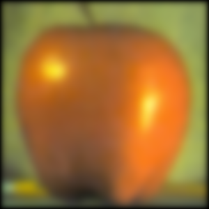
Apple, Gaussian level 15: most fine structure has disappeared and the fruit is
approximated by a smooth blob with gentle shading.
Orange, Gaussian level 0: original scale with strong peel texture and crisp separation
between fruit, table, and background.
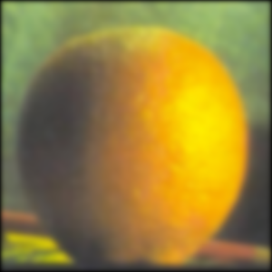
Orange, Gaussian level 5: mid-level blur diminishes fine pore structure while preserving
the main highlight and shadow pattern around the volume.
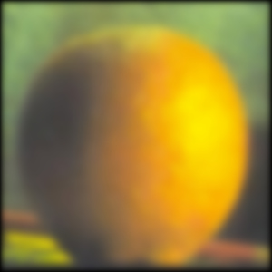
Orange, Gaussian level 10: the fruit is represented primarily by its smooth outline and
broad tonal regions; detailed texture is largely absent.
Orange, Gaussian level 15: only very low-frequency information remains; the fruit
resembles a soft, uniformly shaded disc.
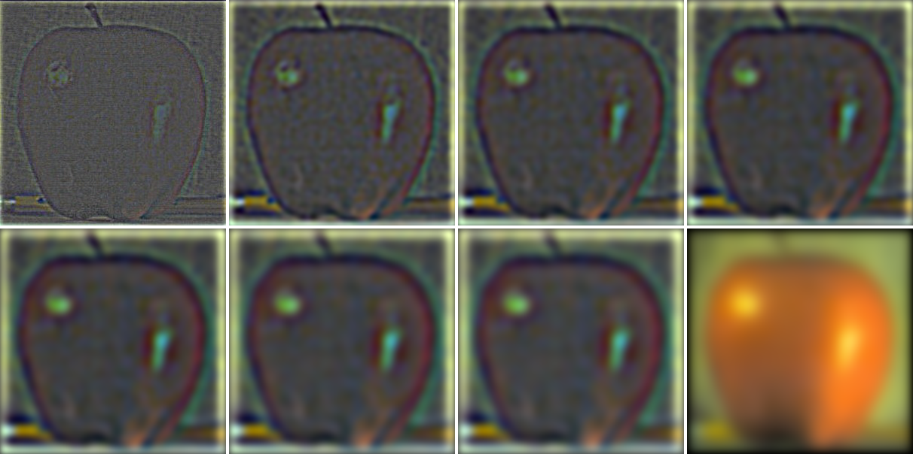
Laplacian stack for the apple: each level isolates detail at a specific scale, from fine
noise and edge fragments to coarse transitions along the contour.
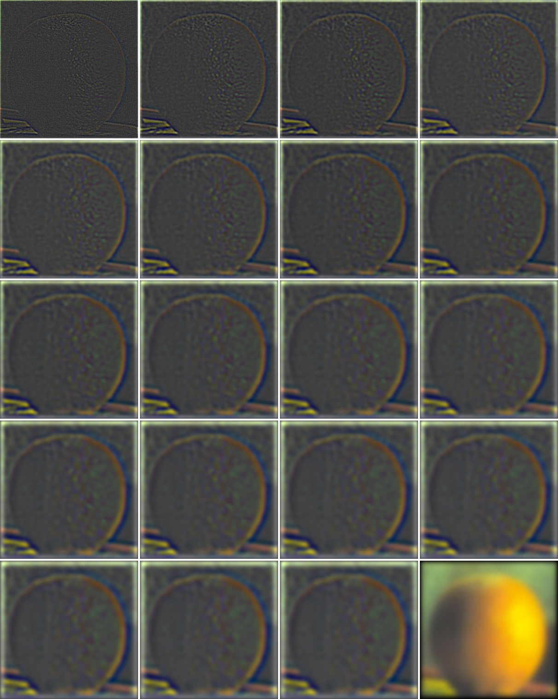
Laplacian stack for the orange: high-frequency bands emphasize peel texture; coarser
bands carry only broad contrast changes between fruit, table, and background.
Laplacian stack levels across scale
Apple, Laplacian level 0: highest-frequency band dominated by sensor noise, background
fabric, and the thinnest edges around the boundary.
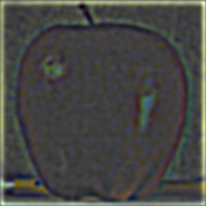
Apple, Laplacian level 5: mid-frequency band capturing the main contour and sharper
portions of the specular highlights, with much of the fine noise removed.
Apple, Laplacian level 10: coarse band describing broad transitions between fruit and
background and large-scale shading variations across the body.
Apple, Laplacian level 15: lowest-frequency band with weak, diffuse responses; most
energy has migrated into the coarsest Gaussian level.
Orange, Laplacian level 0: highest-frequency band dominated by granular peel texture and
the sharpest edges along the rim of the fruit.
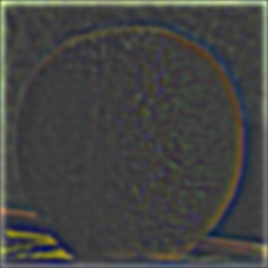
Orange, Laplacian level 5: mid-frequency band emphasizing the main outline and
intermediate-scale transitions between fruit and background.
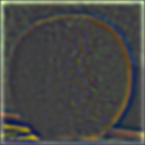
Orange, Laplacian level 10: broad band where only large-scale contrast changes survive,
giving soft rims around fruit and table edge with little interior texture.
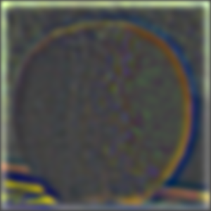
Orange, Laplacian level 15: lowest-frequency band with weak, diffuse structure; the
remaining content is captured by the coarsest Gaussian base.
The apple and orange stacks jointly exhibit how Gaussian and Laplacian decompositions
separate images into complementary descriptions across scale. Gaussian stacks record the
approach to a smooth, low-frequency representation as blur increases, whereas Laplacian
stacks distribute edges and texture into distinct band-pass layers. Because the construction
is linear and reconstructive—summing all Laplacian levels together with the coarsest
Gaussian recovers the original image—it supplies a principled basis for multi-resolution
operations such as blending, tone manipulation, and detail transfer that act selectively on
specified spatial scales.